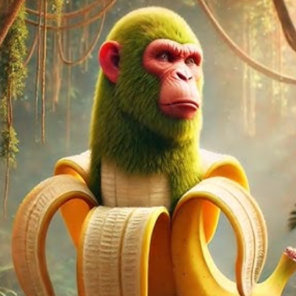

Szympansini Bananini
Szympansina Bananina to rezolutna, bystra i zawsze pełna energii małpka, która mieszka w samym sercu tropikalnej dżungli. Uwielbia banany bardziej niż cokolwiek innego na świecie – potrafi rozpoznać ich dojrzałość z odległości kilometra!
Ma futerko w odcieniu czekoladowym, wielkie, błyszczące oczy i charakterystyczną różową kokardę na głowie, dzięki której jest rozpoznawalna w całej okolicy. Słynie z tego, że rozwiązuje konflikty między zwierzętami – nie siłą, lecz sprytem i... bananami.